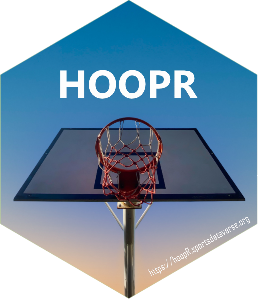

A utility to quickly obtain clean and tidy men's basketball play by play data. Provides functions to access live play by play and box score data from ESPN<https://www.espn.com> with shot locations when available. It is also a full NBA Stats API<https://www.nba.com/stats/> wrapper. It is also a scraping and aggregating interface for Ken Pomeroy's men's college basketball statistics website<https://kenpom.com>. It provides users with an active subscription the capability to scrape the website tables and analyze the data for themselves.
Useful links: